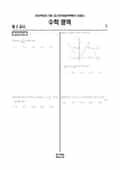

문제지

시험지 만들기준비하고 있어요. 열리면 아래 탭에서 바로 쓸 수 있어요.
전국연합학력평가 · 시·도교육청 주관
2023년 4월 고3 학력평가 수학 기하 1등급컷은 원점수 77점(역산값), 표준점수 최고점은 162점입니다.
원점수 1등급컷은 공식 발표값이 아니라 EBSi·입시기관 값입니다. 등급별 값은 등급컷 표, 출처 구분은 데이터 원칙에 있습니다.

| 등급 | 표준점수 이상 | 인원(명) | 비율 |
|---|---|---|---|
| 1 | 136 | 11,482 | 4.06% |
| 2 | 126 | 25,114 | 8.89% |
| 3 | 118 | 28,891 | 10.23% |
| 4 | 106 | 48,514 | 17.17% |
| 5 | 90 | 56,771 | 20.1% |
| 6 | 81 | 49,652 | 17.58% |
| 7 | 77 | 32,000 | 11.33% |
| 8 | 74 | 20,498 | 7.26% |
| 9 | 65 | 9,570 | 3.39% |
수학 영역 전체 응시자 기준이에요.
출처: 시·도교육청이 공개한 전국연합학력평가 성적 분석·통계자료(공개 자료 보기).
발행 기관: 시·도교육청(전국연합학력평가). 파일 위치: 이 사이트가 보관한 사본. 저작권은 발행 기관에 있습니다. 원본과 다르거나 게시 중단이 필요하면 연락처로 알려 주세요. 등급컷 출처 구분은 데이터 원칙에서 설명합니다.
막대 색은 역대 대비 난이도 · 진한 막대가 이 시험 · 막대를 누르면 그 회차로 이동
| 회차 | 1등급컷 | 표점 최고 | 1등급 표점 | 난이도 |
|---|---|---|---|---|
| 4월 학평2023년 고3이 시험 | 77 | 162 | 136 | 어려움 |
| 3월 학평2023년 고3 | 79 | 159 | 138 | 어려움 |
| 10월 학평2022년 고3 | 81 | 154 | 136 | 어려움 |
| 7월 학평2022년 고3 | 82 | 152 | 136 | 보통 |
| 4월 학평2022년 고3 | 76 | 160 | 138 | 매우 어려움 |
| 3월 학평2022년 고3 | 75 | 165 | 141 | 매우 어려움 |
| 10월 학평2021년 고3 | 79 | 163 | 140 | 매우 어려움 |
| 7월 학평2021년 고3 | 88 | 144 | 135 | 쉬움 |
| 4월 학평2021년 고3 | 84 | 147 | 133 | 매우 쉬움 |
| 3월 학평2021년 고3 | 88 | 157 | 139 | 매우 쉬움 |
공통과목 22번(4점, 96.7%)은 두 상수와 이차함수로 정의한 함수가 조건을 만족시키는 경우를 다룬 문항, 21번(4점, 85.0%)은 좌표평면 위의 점들이 거리 조건을 만족시키는 문항, 20번(4점, 77.5%)은 등차수열의 합에 대한 조건 문항이었습니다.
객관식 15번(67.8%)은 조건을 만족시키는 수열의 최댓값과 최솟값을 로그로 묻는 문항, 11번(65.3%)은 삼각함수 방정식의 실근 문항, 14번(61.9%)은 닫힌구간에서 두 함수를 비교하는 문항으로 응답의 35.1%가 한 오답에 몰렸습니다.
기하 30번(4점, 87.4%)은 포물선 위를 움직이는 점과 벡터 조건을 다룬 문항, 29번(79.5%)은 쌍곡선 위의 점과 두 초점 문항이었습니다. 기하 응시자에게는 공통 22번이 선택 30번보다 어려웠습니다.
최고점자가 50명이 안 될 만큼 공통 22번과 선택 29·30번이 모두 어려웠던 회차입니다. 4월 시점에서는 최고난도 문항보다 객관식 11~15번에서 실수를 줄이는 것이 1등급 확보에 더 중요합니다.